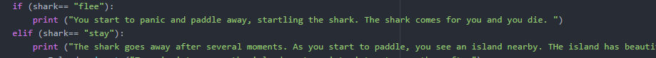
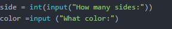
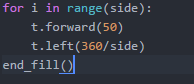

An example is an if-statement, in which it checks if a statement fits the condition.
A part of the program that has a sequence of procedures. It organizes the code better and programmers call it when the code is the same.
A value stored in memory. It can be an integer, double, float, long, boolean, string, or many more.
Used to repeat a sequence of code. It could be a while loop or a for loop. It organizes the code better.
